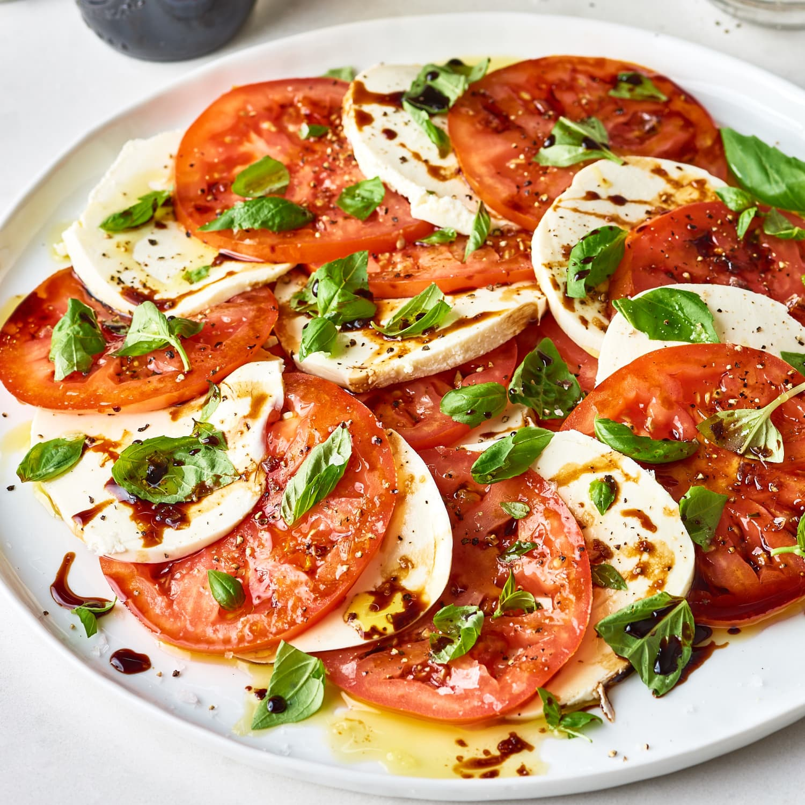

Odin Recipes
Caprese Salad

Description
Easy caprese salad recipe features in-season tomatoes, fresh mozzarella, fragrant basil, a drizzle of olive oil,
and a spoonful of balsamic glaze.
Ingredients
- 2 Large ripe tomatoes, sliced
- 8 ounces of fresh mozzarella cheese, sliced
- 20 fresh basil leaves
- 2 tablespoons extra-virgin olive oil
- 1 tablespoon balsamic glaze
- Salt and black pepper to taste
Steps
1 | Place tomato and mozzarella slices in an alternating pattern on a serving plate.
2 | Tuck the fresh basil leaves in between the slices.
3 | Sprinkle with salt and black pepper.
4 | Drizzle olive oil and balsamic glaze over the top. Serve right away.
Home